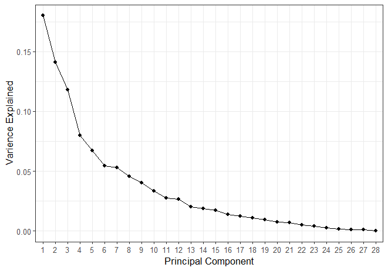
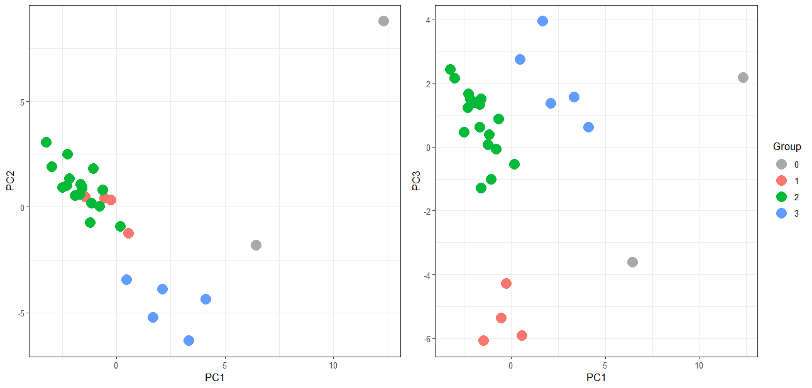
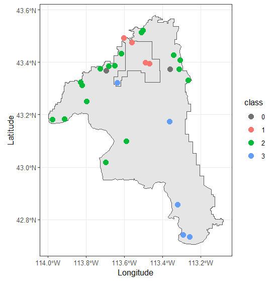

Statistical Clustering of Vegetation Cover Data
Introduction
In 2024 a group of researchers collected data on the vegetative cover of 28 sample frames across the Craters of the Moon National Monument and Preserve. In this project I work with this data to group the sample frames into ecologically similar groups based on their species composition and physical geography.
Assessing the similarity of specie composition between different locations in an ecosystem is important for understanding the extent of ecoregions and can decrease the resources required for field surveys over time.
Craters of the Moon is located in Idaho and is ecologically unique because of its volcanic features. Much of the preserve is covered in recent lava flows. This creates distinctly vegetated areas. Some areas are recovering from destructive lava flows while other have been undisturbed by the volcanic activity. Still other areas have been surrounded by lava flows and cut off from the rest of the ecosystem. These islands of vegetation surrounded by lava flows are call Kipukas and represent areas of particular interest to conservation becuase they have been isolated and sheltered from grazing animals.
 The data I use in this project was collected for a study by Christian Stratton et al. in which researchers selected 28 sample frames that represented Craters of the Moon's diverse sub eco-regions.
Within each of these 10-hectare sample frames, they collected data from about 50 sample locations by assessing the visual cover of all present species within a 1m by 1m quadrat. Specifically, they assessed the proportion of the quadrat covered by the plant, and then mapped these percentages to the Daubenmire scale which ranges from 0 to 6 as defined by the table below.
The data I use in this project was collected for a study by Christian Stratton et al. in which researchers selected 28 sample frames that represented Craters of the Moon's diverse sub eco-regions.
Within each of these 10-hectare sample frames, they collected data from about 50 sample locations by assessing the visual cover of all present species within a 1m by 1m quadrat. Specifically, they assessed the proportion of the quadrat covered by the plant, and then mapped these percentages to the Daubenmire scale which ranges from 0 to 6 as defined by the table below.
| Daubenmire Value | % Vegetative Cover | Mid Point |
|---|---|---|
| 0 | 0% | 0% |
| 1 | 0-5% | 2.5% |
| 2 | 5-25% | 15% |
| 3 | 25-50% | 37.5% |
| 4 | 50-75% | 62.5% |
| 5 | 75-95% | 85% |
| 6 | 95-100% | 97.5% |
Data Preprocessing
The data I started with was structured so that each species was a different column, resulting in a very high-dimensional data set. This posed a problem because most clustering algorithms struggle with high-dimensional data, so I took some steps to simplify the data set. First, I removed rare species from my analysis. Many of the species only show up a handful of times in the study. Because of this, I decided to remove any species that appeared fewer than 10 times. This removed 23 species that showed up so little that they likely could not significantly impact sample frame groupings.
I further manipulated that data by converting the Daubenmire value back to percentages. I estimated each value as the mid-point percentage of each Daubenmire range. I did this so that I could average the sample locations by sample frame without skewing that data, and this was necessary because I wanted the groupings on the scale of the sample frame. Finally, I further decreased the number of dimensions by conducting a Principal Component Analysis (PCA).
Methods
Principal Component Analysis
 A visualization of the first and second principal components are shown to the right. From this graph I concluded that there are likely outliers to any grouping scheme I create. The point in the top right is far from any other points, and so it is going to be important to select a clustering method that is not sensitive to outliers. I also spent a little while trying to interpret the loadings of the principal components; however, because there are so many are so many different variables in the data set, it was impossible to come to any meaningful conclusions. Fortunately it is not actually important to know what the principal components represent because I am just using them as a way to reduce the dimensions so that the clustering functions work better. Once I have my groups, I'll describe them with the original vegetative cover variables.
A visualization of the first and second principal components are shown to the right. From this graph I concluded that there are likely outliers to any grouping scheme I create. The point in the top right is far from any other points, and so it is going to be important to select a clustering method that is not sensitive to outliers. I also spent a little while trying to interpret the loadings of the principal components; however, because there are so many are so many different variables in the data set, it was impossible to come to any meaningful conclusions. Fortunately it is not actually important to know what the principal components represent because I am just using them as a way to reduce the dimensions so that the clustering functions work better. Once I have my groups, I'll describe them with the original vegetative cover variables.
{kind=link}
Clustering
Now that I had my data set reduced down to three variablres, I moved onto classifying the sample frames. Again, I wanted a clustering algorithm that was not distorted by outliers, so I tried density-based clustering and then a Gaussian mixture model. After some experimentation and visual assesment, I decided that the Gaussian mixture model was performing better. I used the Mclust function out of the mclust package in R to implement this clustering method. I included a noise argument into the function for sample frame 25 which is the point in the top right of the plot above. This gives the Mclust function a starting point for trying to assess which data points are noise and shouldn't be included into any group. The results of the clustering are visualized by principal component in the plot below. The points are colored by their assigned group; the points that are assigned to group zero are considered noise or outliers.
{kind=link}

Visually these grouping seem pretty good, and this is supported by the calculated uncertainty which represents the probability that each sample frame actually belongs to a different group than the one assigned. The point with the highest uncertainty was only 12%, and the rest of the points had uncertainty of under 2%.
Analysis and Results

{kind=link}

The graphs above show the six most common species in each group of sample frames. The vegetative cover values are doubley averaged; first, they are averaged across the individual quadrats of each sample frame, then they are averaged across the grouping I created. There are some species like Artemisia tridentata that are common in all groups; this simply means this species is common across the entire Craters of the Moon National Monument, so the more informative species are the ones that are only present in one or two of the groups.
From this you can infer that group one is characterized by Elymus lanceolatus, Eriogonum, and Purshia tridentata. Group two on the other hand is defined mainly as the only group that has Leptodactylon pungens. Group three is characterized by an overwhelming abundance of Bromus tectorum and also the precense of Artemisia tripartita and Sisymbrium altissimum.
 As far as physical geography of the groups, group one tends toward higher elevation areas with steeper slopes. Group two and three have similar characteristics, but group three was entirely on Kipukas and the only other Kipuka sites were assigned as noise.
As far as physical geography of the groups, group one tends toward higher elevation areas with steeper slopes. Group two and three have similar characteristics, but group three was entirely on Kipukas and the only other Kipuka sites were assigned as noise.